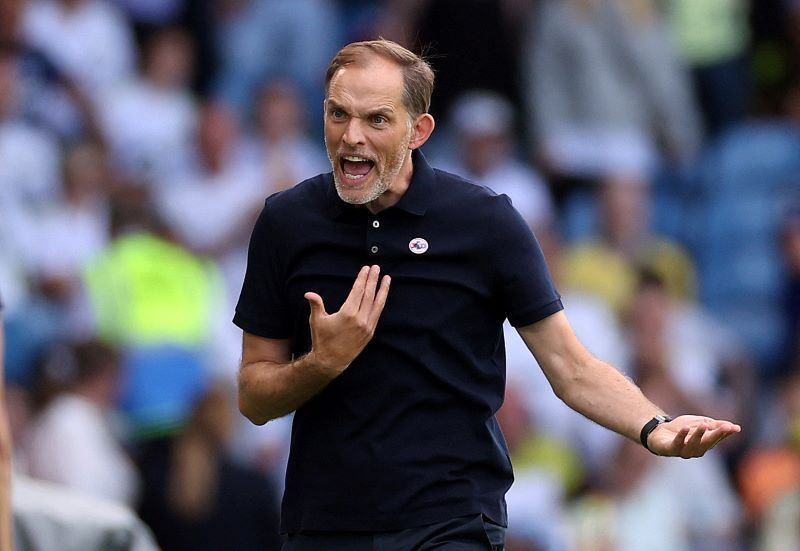
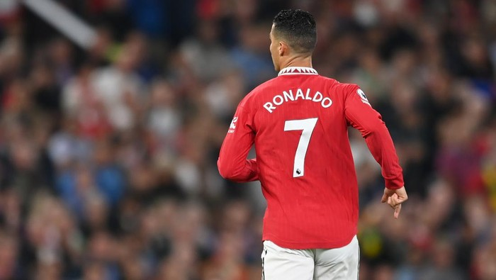

Aldin Ariel Pramudya
Jalan Melati Kav 11 Songgokerto Batu
Batu, 23 April 2003
Tuchel Didenda Rp 345 Juta Karena Kritik Wasit Anthony Taylor
Thomas Tuchel kembali dihukum FA. Manajer Chelsea itu didenda ratusan juta rupiah karena komentarnya terkait wasit yang memimpin laga melawan Tottenham Hotspur. Tuchel mengkritik kepemimpinan wasit Anthony Taylor setelah Chelsea diimbangi Tottenham 2-2 dalam pertandingan "panas" di Stamford Bridge (14/8/2022). Manajer Jerman itu tak puas dengan performa Taylor karena mengesahkan gol-gol penyama Spurs, karena menurut dia sebelumnya ada pelanggaran-pelanggaran yang terjadi. Saking kecewanya, Tuchel merasa Taylor tidak usah lagi ditugaskan memimpin pertandingan-pertandingan Chelsea. "Mungkin akan lebih baik, mungkin akan lebih baik," jawab mantan pembesut Borussia Dortmund dan Paris Saint-Germain ini. Baca artikel sepakbola, "Tuchel Didenda Rp 345 Juta karena Kritik Wasit Anthony Taylor" selengkapnya .
5 Tahun MU, Belanja Rp 13 Triliun, Trofi 0
Lima tahun terakhir, Manchester United belanja gila-gilaan habisi nyaris setengah miliar Pounds. Sayangnya dalam rentang waktu itu, MU nihil trofi. Terakhir Manchester United jadi juara adalah di tahun 2017. Tiga trofi dipersembahkan manajer Jose Mourinho yakni Liga Europa, Carling Cup, dan Community Shield Setelahnya, lemari trofi Setan Merah belum bertambah. Hal itu berbanding terbalik dengan belanja klub yang gila-gilaan.
Alonso : Hamilton Idiot, Ganggu Jalur Balapan Orang Lain

Fernando Alonso amat kesal dengan manuver Lewis Hamilton dalam balapan F1 GP Belgia 2022. Driver 41 tahun itu pun spontan mengeluarkan umpatan kepada juara dunia tujuh kali tersebut. Pada balapan di Spa-Francorchamps, Minggu (29/8), Alonso memulai balapan dari grid ketiga dan Hamilton di urutan empat. Pada lap pertama, keduanya sudah bersaing merebut posisi. Di tikungan 5, insiden antara keduanya tak terhindarkan. Hamilton, yang berada di sisi luar, berusaha menyalip Alonso, namun justru akhirnya bertabrakan dengan pebalap Spanyol tersebut. Roda depan Hamilton berada di depan mobil Alonso saat memasuki tikungan, namun mobilnya masuk ke jalur balapan Alonso.